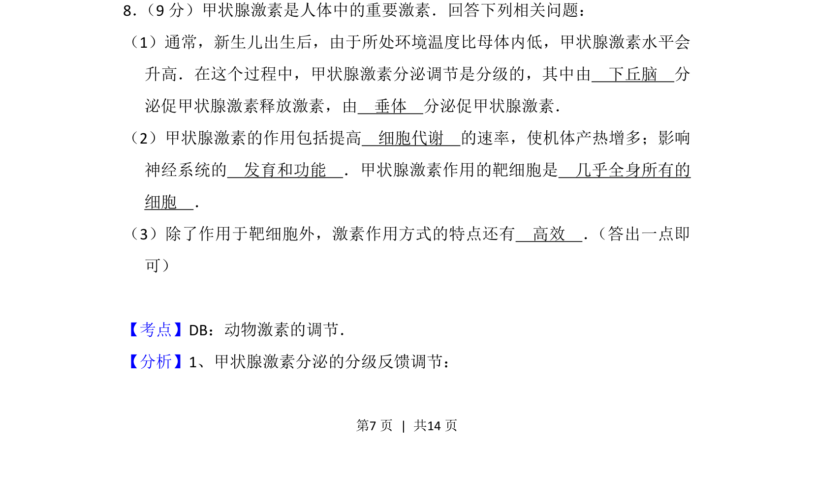
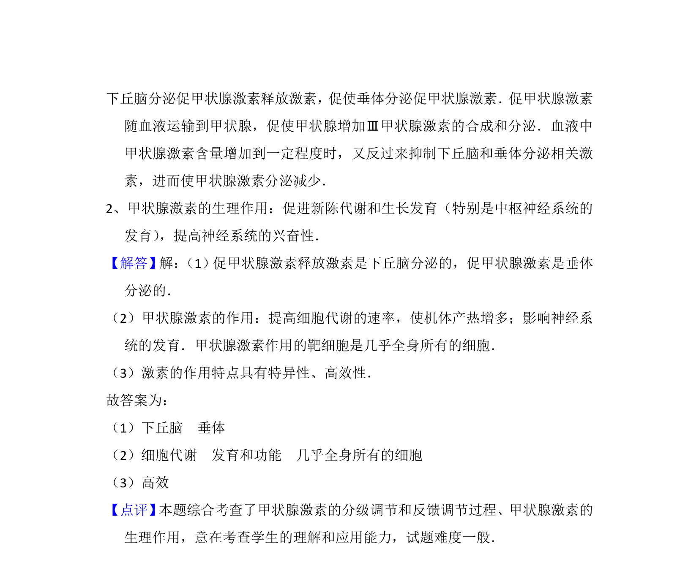

考点：甲状腺激素 分级调节 激素作用特点

本题通过填空形式考查甲状腺激素的分级调节、生理作用及激素调节特点。

📄 原 PDF 第 7 页：
素材/真题/吉林/2008-2024·（吉林）生物高考真题/2015年高考生物试卷（新课标Ⅱ）（解析卷）.pdf
8． （9分）甲状腺激素是人体中的重要激素．回答下列相关问题： （1）通常，新生儿出生后，由于所处环境温度比母体内低，甲状腺激素水平会 升高．在这个过程中，甲状腺激素分泌调节是分级的，其中由 下丘脑 分 泌促甲状腺激素释放激素，由 垂体 分泌促甲状腺激素． （2）甲状腺激素的作用包括提高 细胞代谢 的速率，使机体产热增多；影响 神经系统的 发育和功能 ．甲状腺激素作用的靶细胞是 几乎全身所有的 细胞 ． （3）除了作用于靶细胞外，激素作用方式的特点还有 高效 ． （答出一点即 可）
【考点】DB：动物激素的调节．菁优网版权所有 【分析】1、甲状腺激素分泌的分级反馈调节：